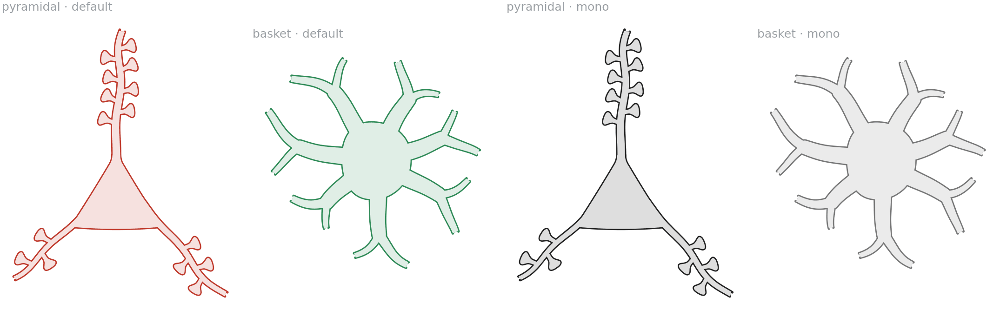
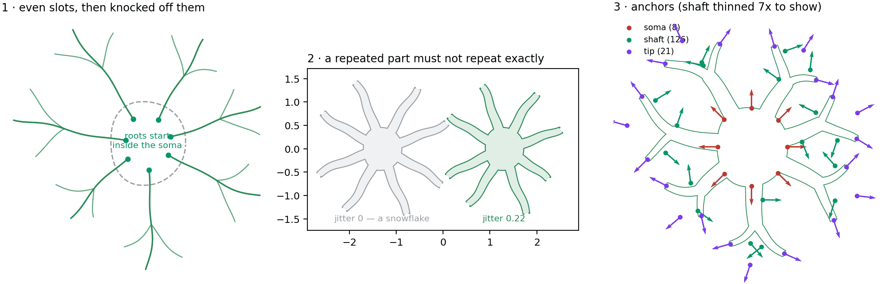
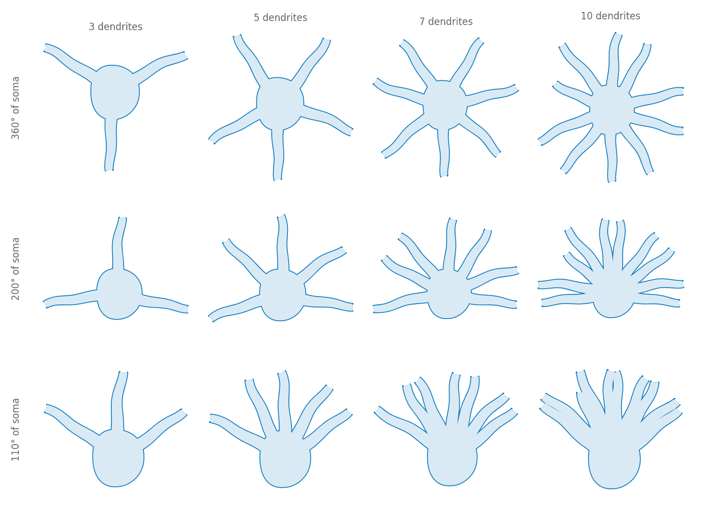
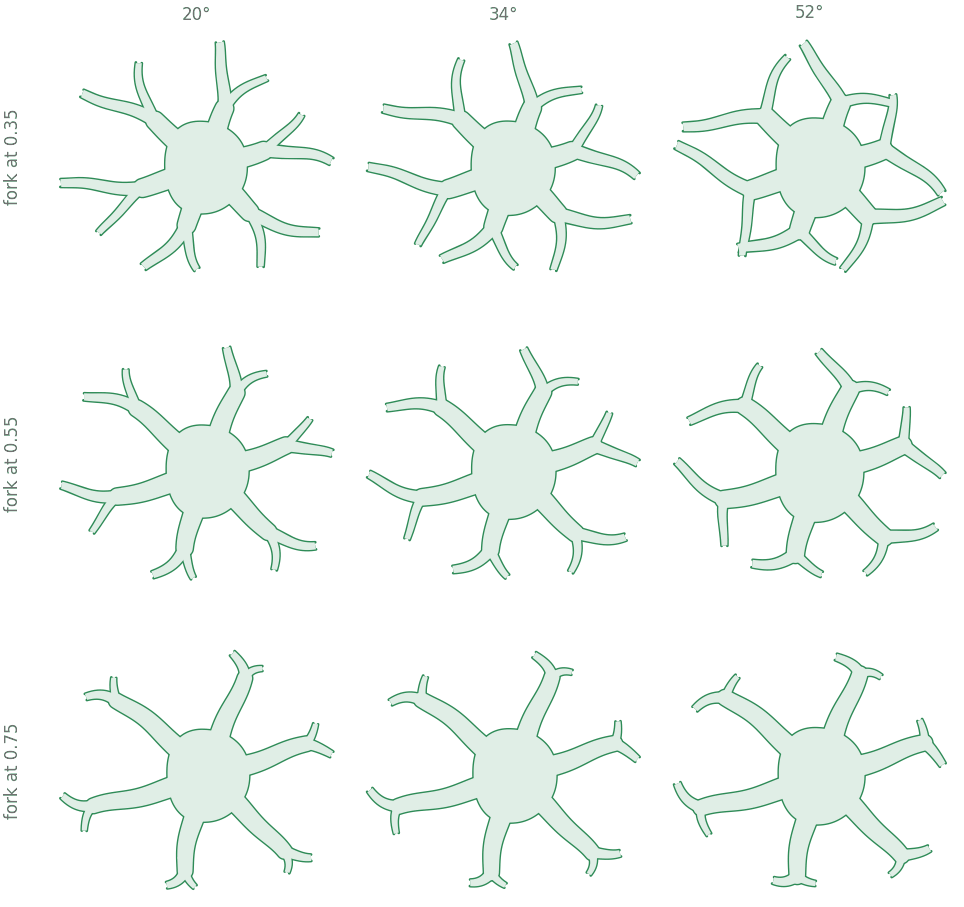
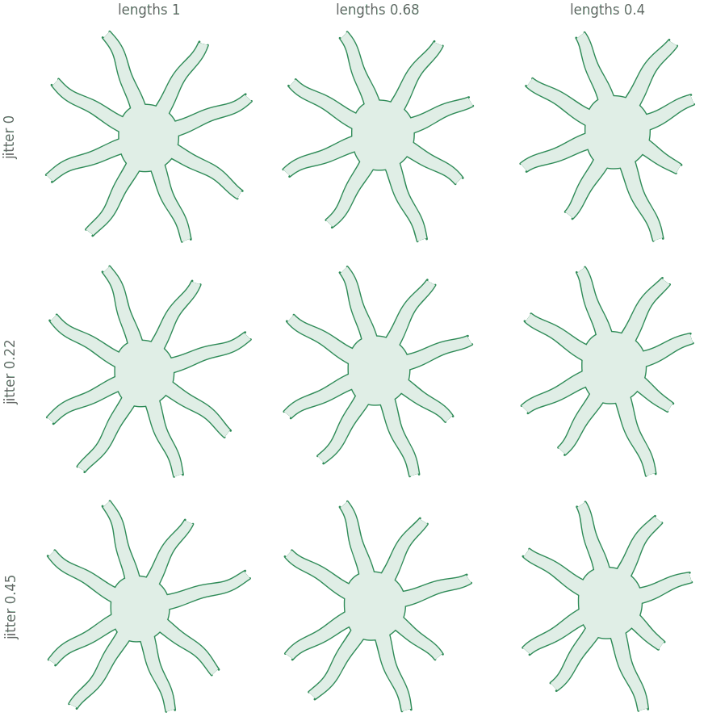
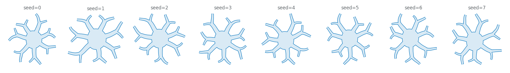

All examples Neuroscience
Basket cell
A round soma with smooth dendrites leaving in every direction — the counterpart to the pyramidal cell, drawn to be told apart from it at a glance.
neuro.Basket

Told apart without colour

How it is built

- Even slots, then knocked off them. Displaced by at most half a step, so the order round the soma survives.
- A repeated part must not repeat exactly. At
jitter=0with equal lengths the cell reads as a snowflake. - Anchors. Round the soma, along every shaft, and at every tip.
| anchor | where | count above |
|---|---|---|
soma | eight points round the wall | 8 |
shaft | both walls of every branch, three per branch | 126 |
tip | the end of each branch | 21 |
Drawing one
import biodraw as bd
cell = bd.neuro.Basket(
dendrites=7, # how many leave the soma
forks=0.55, # fraction along each at which it splits, None for straight
length_ratio=0.68, # shortest dendrite as a fraction of the longest
jitter=0.22, # how far each wanders off its even slot
seed=2, # fixes both — same seed, same cell, forever
)
fig, ax = bd.canvas(figsize=(3.6, 3.6))
cell.draw(ax=ax, wall_lw=1.0, gid="basket")
cell.fit(ax, pad=0.14)
bd.save(fig, "basket.svg")
top = cell.anchor("soma", deg=90.0)Body plans

Branching

Regularity

Seeds

Every figure above is output, not a stored asset —
drawn by basket_cell/build.py, in Python, on a matplotlib axes.